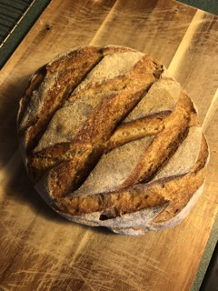

Lazy Sourdough Bread

Description
Craving a delicious homemade bread but don't want to deal with the hassle of setting timers? Well, this lazy sourdough recipe is perfect for you! I've followed this recipe dozens of times, producing consistently delicious results. Soft on the inside, crunchy on the outside. Once you try this recipe, you'll discard all the others. Please note, a sourdough starter is required, so follow this link to Brian Lagerstrom's video on how to make one.
Ingredients
- 100g ripe sourdough starter (I fed mine once the night before)
- 350g warm water (I use ~100 degree F tap water)
- 450g bread flour
- 50g whole wheat flour
- 10g salt (preferably sea salt)
- Semolina flour or corn meal for dusting
Steps
- Autolyse. Combine all ingredients in large bowl until all the dry bits are incorporated. Cover and let dough rest for ~1 hr.
- Stretch & Fold. Stretch dough until you meet some resistance, and fold it upon itself. Repeat this about 5 times, making your way around the dough. The dough won't have much give at this point, that's okay. Flip the dough over to the smooth side and gently shape into a ball. Cover and let rest for 30-60 minutes.
- Repeat step 2 for 4-6 rounds. After your stretch & fold rounds, the dough will have developed a solid gluten network, and the size of the dough will have risen a bit.
- Bulk Ferment. Let your dough rise in a warm place for a few hours. It should increase in size about 75-100%.
- Shape. Flour the top of your dough ball liberally and plop it onto the counter, floured side down. Gently stretch the dough out until it has no more give. Grabbing the outer edge of the dough, fold one area into the middle at a time, going around the dough like a clock. Flip the dough over. Pull the dough towards yourself tighten the ball, using the counter to increase the surface tension. Let rest for 20 minutes.
- Repeat process of stretching edge of dough into center. Once again, pull dough towards self to make a tight ball.
- Place dough seam-side down in well-floured bowl or banneton. Let rest for ~1-2 hours or until it has increased in size ~50%. Place dough in fridge to ferment overnight.
- Preheat & Prepare. The next day, place dutch oven in oven and preheat to 475 degrees F. Lay out a piece of parchment paper on counter. Dust seam-side of dough with semolina or corn meal. Flip onto parchment paper in one swift motion so seam-side is down.
- Score & Bake. Use a sharp bread lame or razor blade and carefully score bread. For a tutorial on scoring, follow this guide. Remove dutch oven from oven and remove lid, taking care to avoid the hot steam. Lift bread using the parchment paper and carefully place into hot dutch oven. Replace lid and return to oven. Bake for 25 minutes. Remove lid. Bake for another 20-25 minutes, depending on your crust preference. Carefully remove bread from dutch oven and place on a cooling rack. Let rest for at least 3 hours, preferably longer. Enjoy with butter and a little sea salt!